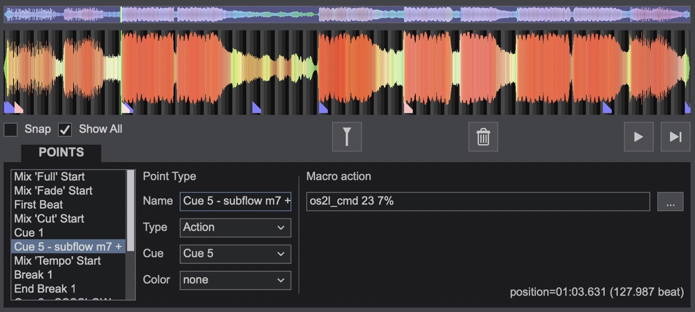

You can control the app using the OS2L protocol which is supported by most DJ software.
The app listens on port 27023. It will receive each detected beat, beat magnitude, and current BPM.
It will also respond to the following commands.
| Command | OS2L Event | OS2L ID | OSL2 Param | Comments |
|---|---|---|---|---|
| Respond to beats instantly Pulse size scales with beat magnitude |
"cmd" | 7 | 100 | e.g. {"evt":"cmd","id":7,"param":100.0} |
| Just set BPM and control phase manually (in case latency is high) |
"cmd" | 7 | 0 | e.g. {"evt":"cmd","id":7,"param":100.0} |
| Set Pulse Size | "cmd" | 11 | 0-100 | <50 = pulse in 50 = no pulse >50 = pulse out e.g. {"evt":"cmd","id":11,"param":72.0} |
| Start UDP-loaded sequence | "cmd" | 17 | 100 | e.g. {"evt":"cmd","id":17,"param":100.0} |
| Pause loaded sequence | "cmd" | 17 | 50 | e.g. {"evt":"cmd","id":17,"param":50.0} |
| Discard loaded sequence | "cmd" | 17 | 0 | e.g. {"evt":"cmd","id":17,"param":0.0} |
| Set Mode Modes are defined here |
"cmd" | 23 | 0-7 | e.g. {"evt":"cmd","id":23,"param":2.0} |
You can send commands via action cues embedded in a track. In the POI editor:

You can also configure custom pad actions. Examples (right-click + save-as-file):
go to main page